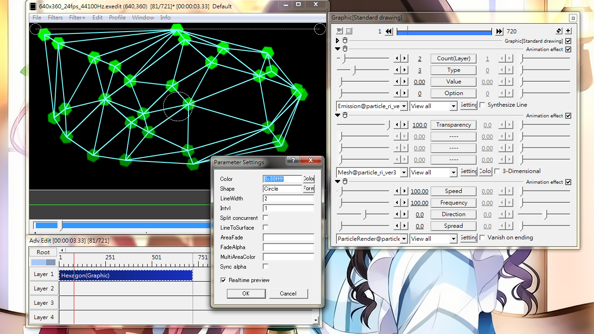
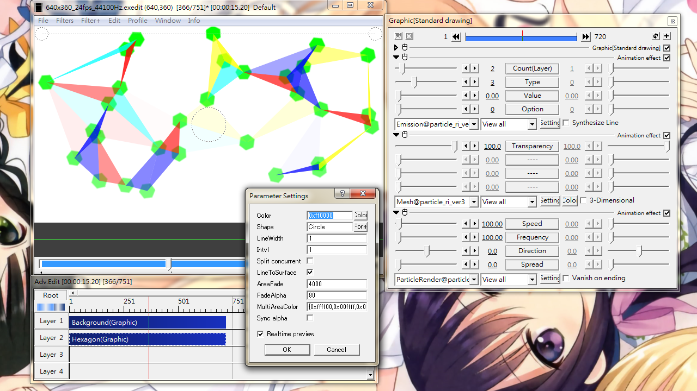

Fig17A: Basic use of Mesh@. The base object is a green hexagon. Emitting from a line going straight downwards.

Fig17B: A more refined example using filled triangle under certain size. The fill color is chosen randomly from Color and MultiAreaColor. Floodfill is enabled via LineToSurface check box. Area threshold is set by AreaFade.
Mesh
Join particles with straight lines.
Slider
Transparency: transparent of linking lines and faces.
Check box
3-Dimensional: Make the mesh looks 3D. Increase joining line count when enabled. If particle has z-movement, the effect will do 3D processing automatically even without this check box ticked.
Setting dialog
Color
Color for line and face.
Shape
The shape that make up the joining lines. However, the shape can hardly be identified when Intvl is 1.
LineWidth
Width of lines linking particles.
Intvl
Separation among successive shapes in a joining line.
Split concurrent
Only links particles that are emitted at the same moment. To be used with the concurrent option in ParticleRender.
LineToSurface
Fill enclosed area instead of drawing lines only. The area are all triangle. See Fig17B for example.
AreaFade
Applies fade-out or fade-in to filled faces.
The value needs to be > 2000 in order to have any visible effect.
+ve value: A triangle fade-out as it approaches the size as defined by this value. The triangle disappear completely when its area exceeds this value.
-ve value: A triangle fade-in as it approaches the size as defined by this value. The triangle is opaque when its area exceeds this value.
FadeAlpha
Final transparency of a filled triangle.
MultiAreaColor
A list of flood fill color candidates. The filling color is taken from this field and the color set in the Color field. See Fig17B for reference.
Sync alpha
Multiply the alpha values from ParticleRender with the transparency setting in this effect.